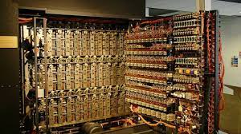

Vida Personal
Turing nació en Maida Vale,Londres, mientras su padre, Julius Mathison Turing, estaba de permiso de su puesto en el
Servicio Civil Indio (ICS) del gobierno del Raj británico en Chatrapur , entonces en la presidencia de Madrás y
actualmente en el estado de Odisha ,en India.El padre de Turing era hijo de un clérigo, el reverendo
John Robert Turing, de una familia escocesa de comerciantes que había tenido su base en los Países Bajos y que incluía
a un baronet.La madre de Turing, esposa de Julius, era Ethel Sara Turing ( de soltera Stoney), hija de Edward Waller
Stoney, ingeniero jefe de Madras Railways.Los Stoney eran una familia de nobleza angloirlandesa protestante del condado
de Tipperary y del condado de Longford,mientras que la propia Ethel había pasado gran parte de su infancia en el
condado de Clare.Julius y Ethel se casaron el 1 de octubre de 1907 en la iglesia de Bartholomew en Clyde Road,en Dublín.
Los padres de Turing lo inscribieron en St Michael's, una escuela primaria en 20 Charles Road, St Leonards-on-Sea ,
desde los seis hasta los nueve años. La directora reconoció su talento y señaló que ella ha "... tenido muchachos
inteligentes y trabajadores, pero Alan es un genio".Entre enero de 1922 y 1926, Turing fue educado en la Escuela
Preparatoria Hazelhurst, una escuela independiente en el pueblo de Frant en Sussex (ahora East Sussex ).
En 1926, a la edad de 13 años, ingresó en la Sherborne School , [32] un internado independiente en la ciudad comercial de
Sherborne en Dorset, donde se alojó en Westcott House. El primer día del semestre coincidió con la huelga general de 1926
en Gran Bretaña, pero Turing estaba tan decidido a asistir que montó en bicicleta sin compañía 60 millas (97 km)
desde Southampton hasta Sherborne, pasando la noche en una posada.
Después de graduarse de Sherborne, Turing estudió el curso universitario en el Anexo B (es decir, las Partes I y II de los Tripos de Matemáticas,de tres años de duración, con cursos adicionales al final del tercer año, ya que la Parte III solo surgió como una parte separada). Licenciado en 1934) desde febrero de 1931 hasta noviembre de 1934 en King's College, Cambridge, donde recibió honores de primera clase en matemáticas. Su disertación, Sobre la función de error gaussiana , escrita durante su último año y entregada en noviembre de 1934 (con fecha límite el 6 de diciembre) demostró una versión del teorema del límite central.. Finalmente fue aceptado el 16 de marzo de 1935. En la primavera de ese mismo año, Turing comenzó su curso de maestría (Parte III) —que completó en 1937— y, al mismo tiempo, publicó su primer artículo, un artículo de una página. llamado Equivalencia de casi periodicidad izquierda y derecha (enviado el 23 de abril), presentado en el décimo volumen del Journal of the London Mathematical Society.Más tarde ese año, Turing fue elegido miembro del King's College gracias a su tesis.Sin embargo, y, sin que Turing lo supiera, esta versión del teorema que demostró en su artículo, ya había sido demostrada, en 1922, por Jarl Waldemar Lindeberg.. A pesar de esto, el comité encontró originales los métodos de Turing y, por lo tanto, consideró el trabajo digno de consideración para la beca. El informe de Abram Besicovitch para el comité llegó incluso a decir que si el trabajo de Turingse hubiera publicado antes que el de Lindeberg, habría sido "un acontecimiento importante en la literatura matemática de ese año".
El 8 de junio de 1954, en su casa de 43 Adlington Road, Wilmslow,el ama de llaves de Turing lo encontró muerto.
Esa noche se llevó a cabo una autopsia que determinó que había muerto el día anterior a la edad de 41 años y se
citó envenenamiento por cianuro como causa de la muerte.Cuando se descubrió su cuerpo, una manzana
yacía a medio comer junto a su cama, y aunque la manzana no fue analizada para detectar cianuro,se especuló que este
era el medio por el cual Turing había consumido un veneno mortal.
Los restos de Turing fueron incinerados en el Crematorio de Woking sólo dos días después, el 12 de junio de 1954,
con la asistencia de sólo tres personas y sus cenizas fueron esparcidas en los jardines del crematorio,
tal como lo habían sido las de su padre.La madre de Turing estaba de vacaciones en Italia en el momento de su
muerte y regresó a casa después de la investigación. Ella nunca aceptó el veredicto de suicidio.

Inventos y aportes a la ciencia
1.-Maquina de Turing
Elemento fundamental en la teoría de la computación, este dispositivo se encarga del proceso automático para determinar si un problema matemático puede ser resuelto o no mediante un procedimiento definido. Fue ideado para resolver una operación concreta.
2.-Maquina Universal de Turing
Turing la concibió en 1936, el mismo año que teorizó acerca de la máquina de Turing. Su punto de partida es el mismo que el de aquella: resolver todos los problemas matemáticos que pueden expresarse mediante un algoritmo. La diferencia radica en que la máquina universal se asemeja a un ordenador gracias a su capacidad de llevar a cabo múltiples procesos y de ejecutar la función de cualquier máquina de Turing.
3.-Concepto Hipercomputacion
La hipercomputación es la computación o resolución de las tareas que no puede resolver una máquina de Turing. Partiendo de esta idea, en 1938, Turing lanzó la idea de las máquinas oráculo, dedicadas a abordar las tareas que no pueden ser resueltas mediante un algoritmo.
4.-Pilot Model ACE
Basada en 1950 en un diseño de Turing, fue la primera computadora electrónica desarrollada en Gran Bretaña. Es el desarrollo práctico (no mecánico) de la máquina universal de Turing. Almacenaba un programa en su memoria y gestionaba un lenguaje de programación, el Abbreviated Computer Instructions.
5.-Test de Turing
Turing defendía que si una máquina tiene un comportamiento inteligente en todos los aspectos, entonces es inteligente. Para someter esto a examen, creó el test de Turing: una persona actuando como juez se coloca en una habitación y, en otra, una persona y un ordenador. El juez tiene que saber quién es quién a partir de sus respuestas escritas. Si no los distingue, significa que el ordenador ha superado la prueba. Hasta hoy ninguno lo ha logrado.
6.-Biología matemática
De 1952 a 1954, cuando murió, Turing se dedicó al estudio de la morfogénesis, el proceso biológico que lleva a que un organismo desarrolle su forma. Así, Turing lanzó la idea de que la repetición de patrones regulares en el sistema biológico animal, como las rayas en las pieles de las cebras o de los tigres, se debía a dos morfógenos (sustancias químicas) que trabajan a la vez como activadores e inhibidores. Los científicos del King’s College confirmaron la intuición de Turing en 2012.
Logros
Avances en la Inteligencia Artificial
En 1950 Turing inició su artículo Computing machinery and intelligence formulando la siguiente pregunta:
¿las máquinas pueden pensar?. Fue el primer científico en cuestionarse esto, aunque no acuñó el término que hoy
conocemos como inteligencia artificial.
La Inteligencia Artificial es la disciplina científica y tecnológica cuyo objetivo es crear procesos de la mente
y su conexión con el cuerpo a través de la metáfora computacional.
La metáfora computacional es un concepto utilizado por la psicología cognitiva. Dicha disciplina sostiene que el
cerebro posee un sistema de procesos de datos, similar al de una computadora digital. A su vez, el concepto es
utilizado en el estudio de la neurociencia y también en la neurofilosofía (filosofía de la mente).
Mediante el test de Turing se medía la capacidad de una máquina para hacerse pasar por ser humano mediante una
prueba de conversación entre ambos. Si el humano no logra identificar que se trata de una máquina, esta última
sería considerada inteligente.
Salvo incontables Vidas en la II GUERRA MUNDIAL
Junto a su amigo, el matemático británico-estadounidense Gordon Welchman, Turing desarrolló a finales de 1939 y mediados de 1940, una máquina a la que bautizaron como Bombe (una palabra polaca para definir un tipo de helado), con la que consiguieron descifrar con éxito las transmisiones de Enigma. La Bombe eliminaba un gran número de claves enigma probables minimizando las posibilidades. Para cada posible combinación se ponía en marcha con electricidad una cadena de deducciones lógicas. Así, era posible detectar cuándo existía una contradicción y, de este modo, desechar esa combinación. A principios de 1942, se interceptaron y descifraron alrededor de 40.000 mensajes, que se duplicaron en un mes, logrando finalmente interceptar y decodificar dos mensajes por minuto. Según el premier británico Winston Churchill, el trabajo realizado por Turing ayudó a reducir entre dos y cuatro años la guerra en Europa, salvando, de este modo, catorce millones de vidas.